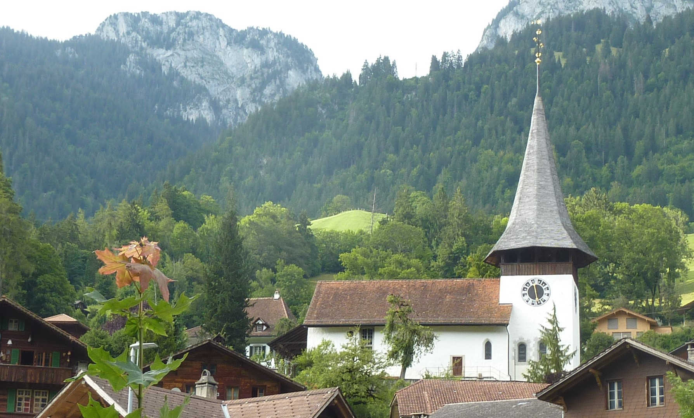
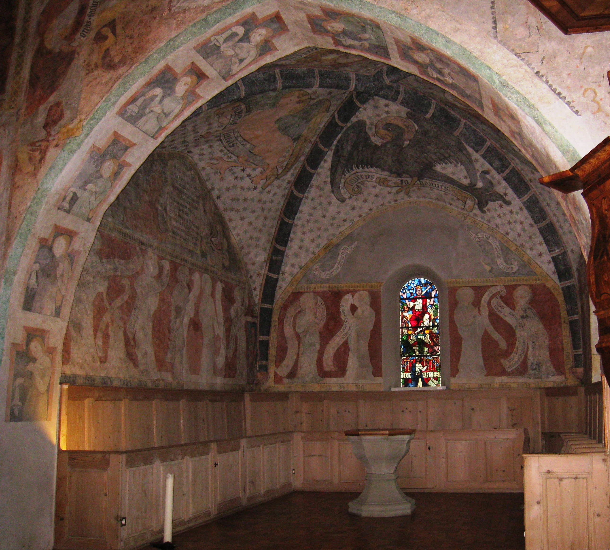

Von der hektischen Verkehrsstrasse führt vom Dorfplatz aus eine gedeckte Holztreppe von 1816 über den Wildenbach zur erhöht gelegenen Kirche über dem Grossdorf. Der mächtige Turm trägt vier Glocken, wobei die älteste aus dem 14. Jahrhundert stammt. Auf Geheiss des Bischofs von Lausanne und dem gotischen Zeitgeschmack entsprechend, wurde nach 1453 der achteckige geschindelte, geknickte Turmhelm gezimmert. Er wurde 1693 mit einem vergoldeten Kreuz gekrönt. Die beiden Zifferblätter der Turmuhr wurden nach mündlicher Überlieferung einmal von Ferdinand Hodler restauriert. Die Uhr zeigt nur die Stunden an, dafür schlägt sie jede Viertelstunde. Das Kirchenschiff mit seinen nordseitig angedeuteten romanischen Rundbogenfenstern ist der älteste Teil der Kirche und stammt aus dem 11./12. Jahrhundert. Sein östlicher Abschluss bildete eine eingezogene Apsis, welche um 1250 dem jetzigen Chorturm mit der etwas später angebauten Sakristei weichen musste. Ein Vorgängerbau aus vorkarolingischer Zeit ist durch Grabungen belegt. Beachtung findet auch der alte Friedhof mit seiner ursprünglichen Ummauerung und seinen Eingangspforten. Das westlich gelegene barocke Pfarrhaus stammt von 1776. Der fünfachsige Bau mit angehängter geschlossener Laube in Fachwerk, wurde vom Bernischen Stadtarchitekten Niklaus Sprüngli (1725–1802) gezeichnet und mit Steinen der oberhalb gelegenen Burgruine erbaut. Die zum Kirchgemeindehaus umgebaute Pfrundscheune gehört ebenfalls zum baulich beachtlichen Ensemble. Glücklicherweise fiel die Kirche dem Brand des ganzen östlichen Grossdorfes 1765 nicht zum Opfer.
Kirche Erlenbach, Simmental (Bild: Hans Hofer).
Ein regionaler Reformator und ein berühmter Heiliger
Auf der westlichen Aussenwandseite der Kirche befindet sich links eine
Gedenktafel für den Reformator des Simmentals, Peter Kunz (um1480–1544).
Der Bauernsohn stammte aus einem oberhalb gelegenen Weiler in Erlenbach,
studierte Theologie im Kloster Interlaken, korrespondierte mit
Wittenberger Theologen um Luther (1483–1546) und mit Zwingli
(1484–1531). 1526 begab er sich mit Berchtold Haller (1492–1536) an die
unerspriessliche Badener Disputation zwischen wichtigen Vertretern des
«alten» und «neuen» Glaubens. Kunz liess sich 1517 als Chorherr von
Interlaken in seine Heimatgemeinde versetzen und zog von hier aus die
Reformation 1527/28 mit der Zustimmung der Niedersimmentaler Bevölkerung
durch. Zuvor wohnte er bereits mit Frau und Kind im Pfarrhaus und
vollzog die Taufe in deutscher Sprache. Offenbar wurden diese
«Missstände» von seinen Gläubigen toleriert, ansonsten hätte ihm die
Exkommunikation gedroht. Eine Berufung als Prädikant ans Berner Münster
1536 belohnte den charismatischen, ungestümen und überzeugten Mann für
seine erreichten Ziele.
Die Reformation brachte drastische Veränderungen mit sich. Unter anderem
wurden viele Kunstwerke zerstört. So auch in dieser Kirche. Die
gotischen Altäre wurden entfernt und die vollständig ausgemalten Wände
mit einer weissen Kalkschicht überzogen. Das Wort Gottes wurde fortan
einzig von der Kanzel verkündet. Glücklicherweise wurden 1901 Spuren der
ehemaligen Malereien nach fast vierhundert Jahren wiederentdeckt und
geraume Zeit später restauriert. Auf der rechten Seite der Westwand
begrüsst uns eine monumentale Christophorusfigur von 1420. Sie bereitet
uns auf ein seltenes Bilder- und Zeiterlebnis im Innenraum vor. Sie gibt
den Einblick in das Werk eines Malers der Spätgotik, dessen Name und
Herkunft unbekannt geblieben sind. Da keine weiteren Arbeiten von ihm
bekannt sind, erhielt er den kunstgeschichtlichen Namen «Meister von
Erlenbach». Christophorus, den Christusträger, findet man als einen der
vierzehn Nothelfer oftmals im Berner Oberland. Der Legende nach behütet
er die Menschen vor einem plötzlichen Tod ohne den Empfang des
Sterbesakraments.
Ein spätgotisches Ambiente
Der erste Blick ins Innere zum Triumphbogen hin erzeugt einen ruhigen,
warmen und meditativen Raumeindruck. Er entsteht durch das
Zusammenwirken von Architektur, lyrischer Malerei und Licht. Wir sehen
uns zurückversetzt in die Zeit der sinnlichen Glaubensinhalte und des
Glaubenszwangs für Menschen mit kurzer Lebenserwartung und stetigem
Blick ins Jenseits. Sie waren des Lesens unkundig und des Verstehens des
Kirchenlateins unfähig. Als Hilfe zum Verständnis der römischen Lehre
dienten im 14. und 15. Jahrhundert bildliche Darstellungen aus der Bibel
(die sogenannte Armenbibel), von Heiligen und theologischen Konstrukten,
die vom Klerus erläutert wurden. In Erlenbach trifft man an den
Schiffswänden auf einen seltenen Bilderzyklus, der die ganze christliche
Heilslehre des Mittelalters darstellt. Einige Bilder fehlen oder sind
nur als Fragmente erhalten geblieben, was Umbauten im 18. und 19.
Jahrhundert zuzuschreiben ist.
Im Jahr 1420 begann der Meister mit seiner Arbeit, die er aus
unbekannten Gründen nicht vollenden konnte. Die Armenbibel beginnt an
der Nordwand mit der obersten Reihe von Westen nach Osten mit Bildern
aus der Schöpfungsgeschichte des Alten Testamentes (Genesis) und erzählt
zuletzt den Brudermord Kains an Abel in drei Szenen. Nach diesem
Sündenfall hofft die Menschheit auf den Messias (Vision Jesses nach
Jesaja 11). Die Wurzel Jesse wird dargestellt mit der heilbringenden
Maria im oberen Bildteil (an der Chorwand).
Die mittlere Reihe erfasst das Leben Jesu mit dessen Geburt, Darbringung
im Tempel, Auftritt als Zwölfjährigem, Taufe, Versuchung und endet mit
dem Einzug in Jerusalem (an der Chorwand). Die unterste Reihe behandelt
die Passion und Auferstehung Jesu und schliesst mit der trinitarischen
Marienkrönung (an der Chorwand). Dieses Bild verheisst den Menschen die
Rückkehr ins Paradies, allerdings nur unter bestimmten Bedingungen.
Diese sind auf der Südwand zu einem etwas späteren Zeitpunkt durch einen
etwas bescheideneren anonymen Maler dargestellt. Ursprünglich sah man
hier das Fegefeuer zur Läuterung der armen Seelen (unter der Empore).
Was erhalten blieb, ist ein Jüngstes Gericht, flankiert von Johannes dem
Täufer rechts und der (nicht mehr sichtbaren) Maria links. Das Stadttor
verkörpert die Paradiespforte mit den posaunenblasenden Engeln und dem
fiedelnden Putto. Dieses Tor konnte man allerdings nur durchschreiten,
wenn man den sieben Sakramenten nachzuleben vermochte. Diese leider
schlecht erhaltenen Bilder sind als Abschluss des Programmes zu sehen.
Ganz vorne an der Südwand erkennt man noch einen zweiten Christophorus
(um 1300).

Kirche Erlenbach, Simmental (Bild: Hans Hofer).
Ein Allerheiligstes mit Überraschungen
Die Malereien des Meisters im Chor sind ganz der Verkündigung und Mission gewidmet. Hier fällt die Apostelgalerie ins Auge. Jeder Jünger trägt eine Schriftrolle mit einem augustinischen Credo in deutscher Sprache. Darüber ist auf der linken Seite eine Sinaiszene mit den zehn Geboten in Kurzform zu sehen. Auf der gegenüberliegenden Seite wird die Bekehrung des Saulus zum Paulus dargestellt. Darunter befinden sich zwei kurz vor der Reformation herausgebrochene Fenster mit neueren Apostelfiguren. Die klugen und törichten Jungfrauen schauen aus der Chorwandlaibung in entgegengesetzte Richtungen herab. Am erhabensten und kraftvollsten wirken die vier Symbole der Evangelisten im sternenübersäten Chorgewölbe.
Chor, Kirche Erlenbach, Simmental (Bild: Hans Hofer).
Ein Spätscholastiker und Weinrebenbesitzer als Stifter
Man fragt sich, wer alle diese Kunstwerke in Auftrag gegeben hat. Es ist Peter Bremgarter, ein Augustiner Chorherr aus Interlaken und Oberhofen, welcher 1417 sein Amt hier antrat. Er hat sich an der nördlichen Chorwand unter seinem Namensvetter Petrus kniend, als Stifter verewigen lassen. Möglicherweise ist der Grund für das Projekt dieses begüterten Bernburgers einem Votivgedanken zuzuschreiben. Seine Darstellung im kleinen Format gründet wohl auf der damaligen Rechtfertigungslehre. Nach dieser versprachen gute Werke im Diesseits einen Bonus im Jenseits. Sehr wahrscheinlich hat der Kirchherr die Malereien privat in Auftrag gegeben. Jedenfalls hat er seiner Gemeinde ein spätmittelalterliches, anspruchsvolles, erzieherisch hochkarätiges Erbe hinterlassen. Zuletzt können wir uns fragen, wo der Kirchenpatron, der heilige Michael, verblieben ist? An den Kirchenwänden war er nicht mehr aufzuspüren. Erst 1980 wurde als Beweis seines Patroziniums ein Siegel von 1360 entdeckt, auf welchem der Erzengel als Drachentöter mit dem Vornamen des damaligen Kirchherrn (Walter Warnagel) dargestellt ist.
Hans Hofer ist Regionalhistoriker und Musiklehrer in Erlenbach im Simmental
Weitere Artikel von {{ author.author }} finden Sie hier:
Zur Vertiefung:
- Verena Stähli-Lüthi und Ernst von Känel: Die Kirche von Erlenbach i.S.: ihre Geschichte und ihre Wandmalereien, Historischer Verein des Kantons Bern 1979.
- Verena Stähli-Lüthi: Die Wandmalereien in der Kirche von Erlenbach im Simmental, Kirchgemeinde 1981.
- Hans-Peter Ryser: Der heilige Christophorus im Berner Oberland, Spiez 1991.
- Kunstführer durch die Schweiz, Gesellschaft für Schweizerische Kunstgeschichte, Band 3, Bern 1982.
- Siegel mit Erzengel Michael: Staatsarchiv Fontes VIII Nr. 894